-
关于蓝胖子
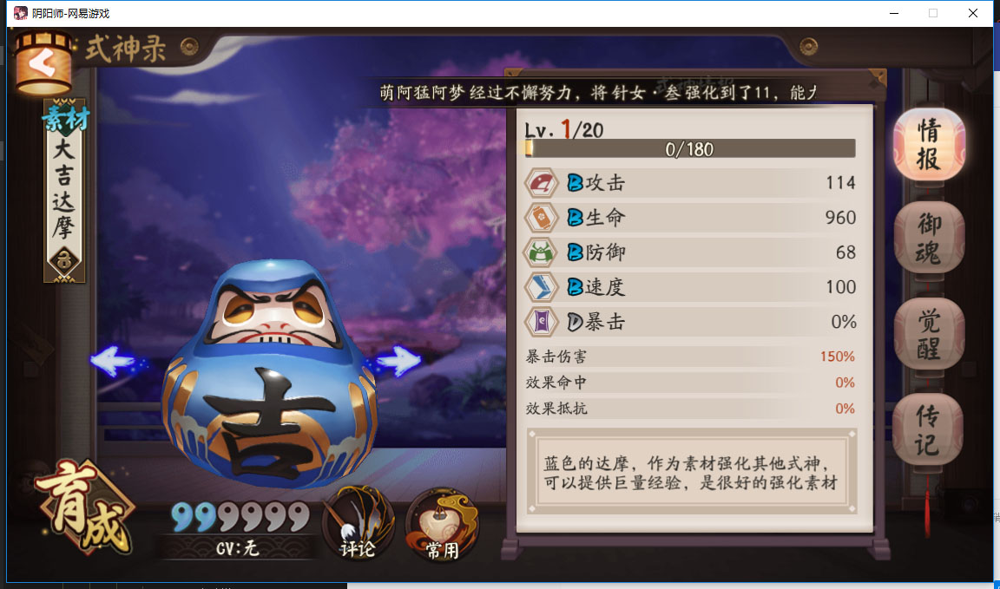↑ 看清楚了，这就是 蓝胖子,最高收益是下面这样 ↓
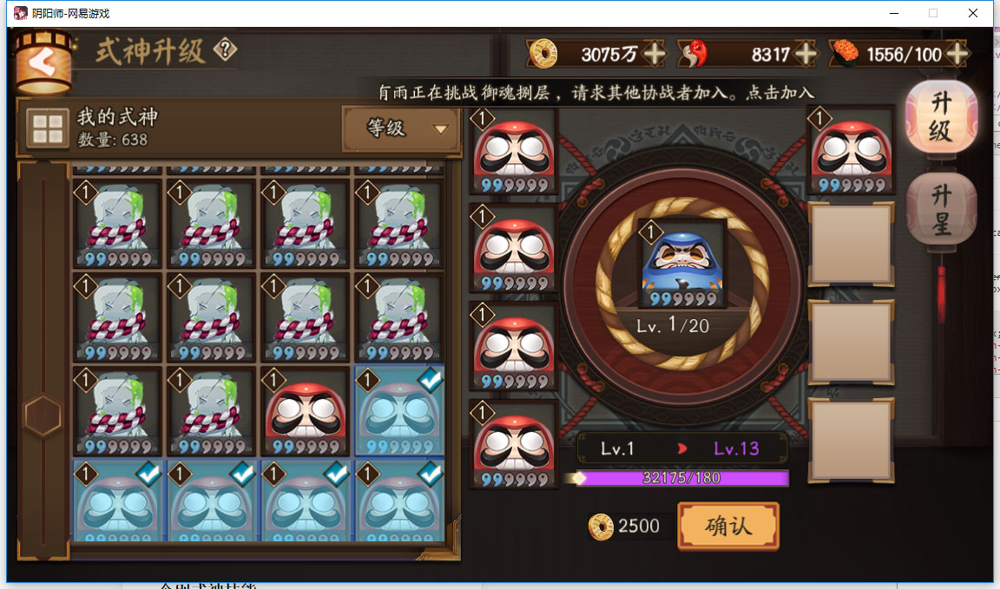↑ 蓝胖子 13级再吃，不要问我为什么，因为这样经验最多。
-
关于白蛋，n卡式神
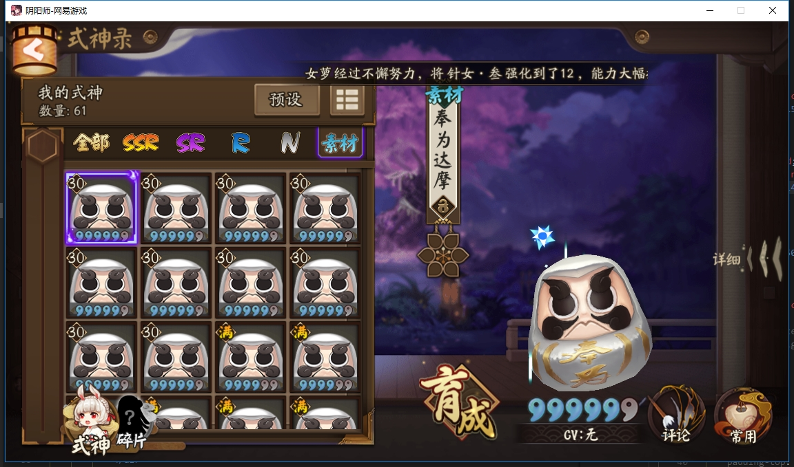↑ 看清楚了，这就是 白蛋,建议如下 ↓
- 白蛋升级是其他式神的 一半经验
- 建议白蛋升级到 4x满级，当作 升6x的狗粮，n卡升级到2x满，3x满即可
- 白蛋够多，可以升级到3x满一批
- 当你准备好5个4x满级，20个3x满级，60个2x满级，120个1级n卡的时候，你从5x式神升6x的金币大概200w+
-
关于嗨蛋
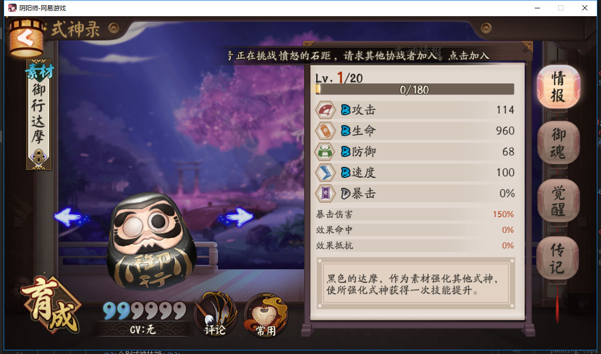↑ 看清楚了，这就是 (｡･∀･)ﾉﾞ嗨蛋,留给你的ssr吧 ↓
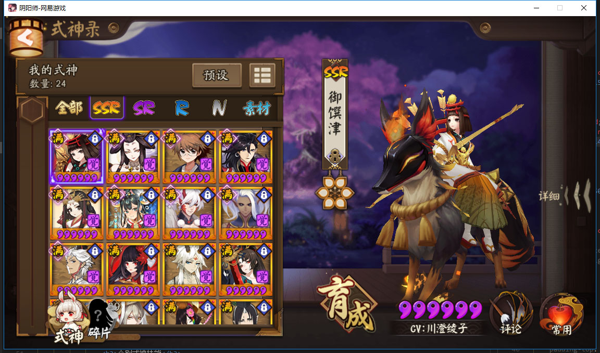↑ 他们都很需要 (｡･∀･)ﾉﾞ嗨蛋升技能，毕竟难抽啊
-
关于重复ssr，sr，r，刚抽出来就是高星的卡
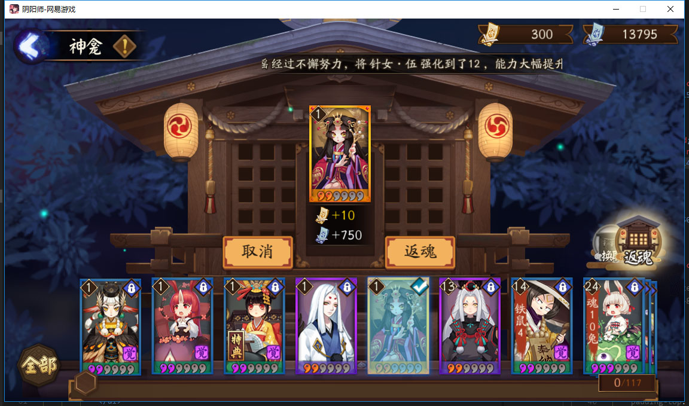↑ 重复的不用说了 返魂了解一下 ↓
- 每个式神留一只 可以升满技能多余的都返魂吧
- 特别作用的式神可以多留几只，
小小黑*2，大天狗*2（突破道馆逢魔真蛇），酒吞愿意的话可以留2（只有逢魔有用），
御馔津*2（打pvp的了解一下恶心人）
兔子*4副本黑科技，
铁鼠 觉醒后有金币加成，日常金币本，升级后处理方式和n或者白蛋狗粮类似 - 刚抽出来就是 3，4，5x的卡，除了ssr （这个做梦吧），请都把他们当作升星级的材料，节约成本，了解一下
狗粮
- 这个玩意没什么好说的， 周二招财，周四针女，周五破势，周末全体随机（火灵），刷刷刷
- 新手借亲友式神过9层，找大佬带10，准备好体力和小纸人刷吧~\(≧▽≦)/~
- 3级御魂返喂：3级返喂不损失经验，超过3级会损失经验，升级错误的时候，就返喂把，返喂是省钱的方式
- 多段攻击针女为主（大天狗，犬神，鸟姐，奕，花鸟（异类）。。。）
- 单体爆发破势为主（大舅，茨木，灯，花。。。）
- 辅助式神奶类：地藏（推荐），镜姬，木魅，被服，树妖，薙魂（无椒图队伍，椒图连线不除发），返魂香（pvp）
- 辅助式控制类：优先命中，后控制套+命中
- 需要速度的式神部分常用的：桃花，惠比寿，花鸟，酒吞，日和（这货可以轮入道），般若，拉条类，椒图，丑女，一目，控制类
- 御魂搭配很多，不局限这么点，这玩意篇幅太长，比如花可以控制，万物皆可招财
御魂
↑ 3级返喂 不损失经验 ↓
关于一定练度玩家的贪吃鬼
↑ 建议这么设置 5x御魂弃置，直接纳奉。4x以及以下的全都吃掉
关于结界卡
↑ 除了太阴的，都是 变异卡，划重点！
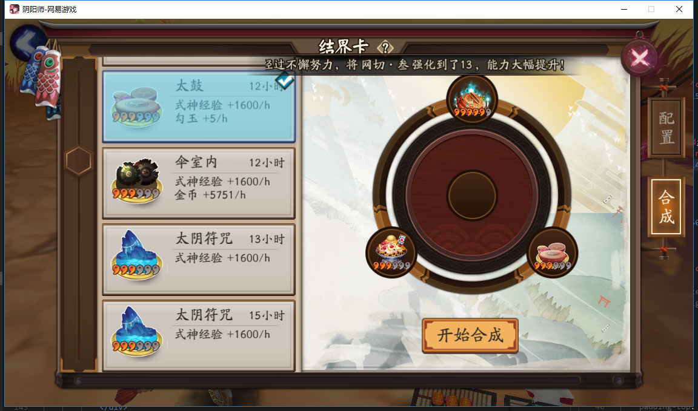↑ 变异+变异必然变异，合成： 高星变异（4.5.6）+2*低星变异
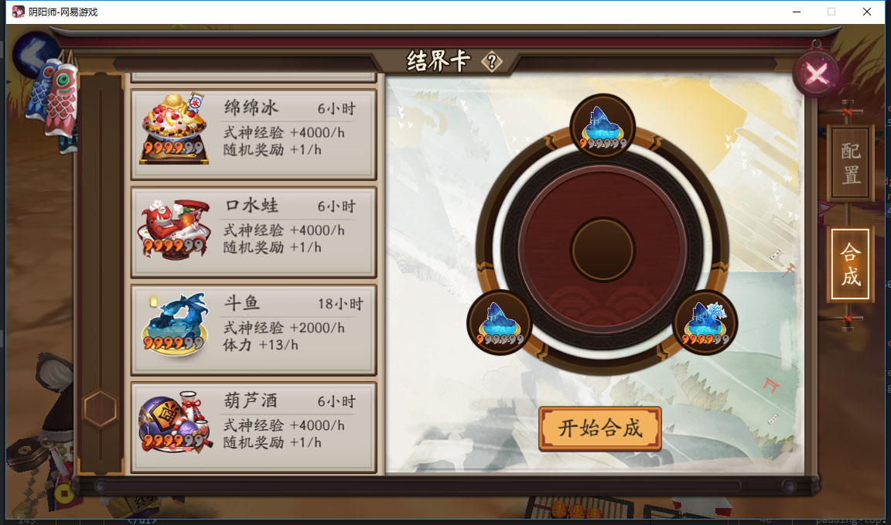↑ 太阴+太阴概率变异，合成： 高星太阴（4.5.6）+2*低星太阴
- 个别式神技能建议先升级技能后在练或者觉醒例子：
惠比寿，觉醒会添加被动鬼火技能，棋子技能更重要，那么就可以先等棋子技能满级后在觉醒
返喂升技能：若升级技能过程中，技能变成了311，这时可以选择，将已经升过级的喂给，没有升过级的，等级会重新随机升，可能会141如此
ssr直接黑蛋吧
ssr并不需要全部满技能：最理想技能升级如下
玉藻前155，辉夜姬135，茨木115，酒吞511，大天狗155，彼岸花155，一目155，青行灯155，面气灵155，买药115，山风155，雪童子115，阎魔151，荒川115
需要满技能的ssr：
荒555，御馔津515，花鸟卷555，陆生515，妖刀515，鬼灯515，小鹿555，
两面佛555（o(ﾟДﾟ)っ这是啥？？？）
个别式神技能
可以获取的小福利
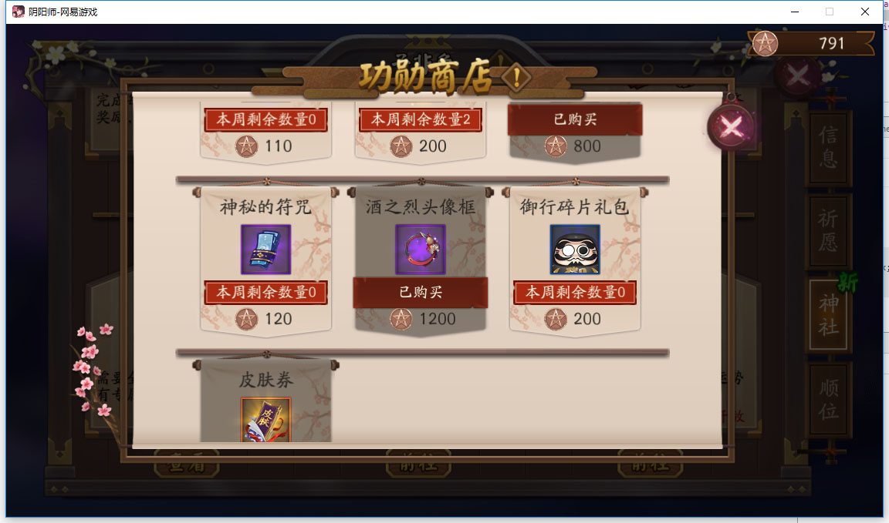每周分享一个蓝票
阴阳寮商店每周2个蓝票，3-5片黑蛋，3x白蛋
杂货铺勋章：1个蓝票，1个黑蛋，1个6x御魂，100体力
每个月特殊画符咒法，百度查，送一蓝票
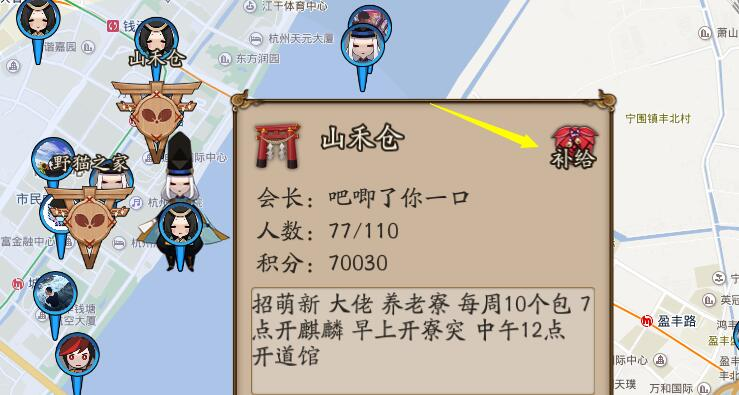阴阳寮-地图-点一个附近的寮，右上角可以领取10体力cd6小时
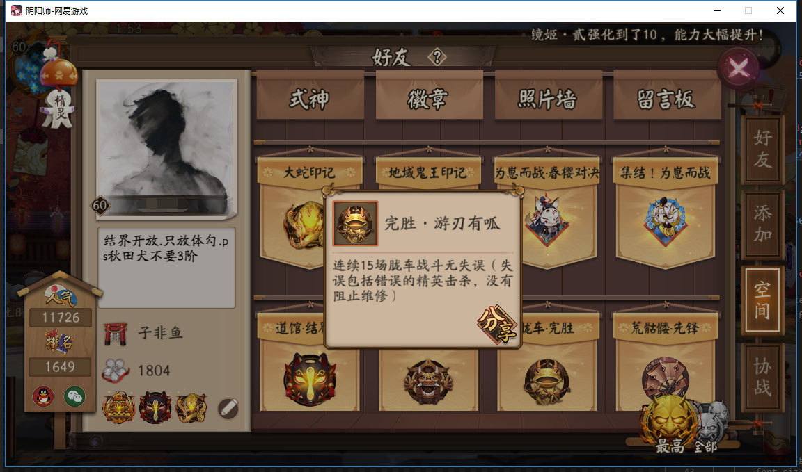↑ 空间-勋章-成就，分享有勾玉
皮肤塔通关分享有勾玉
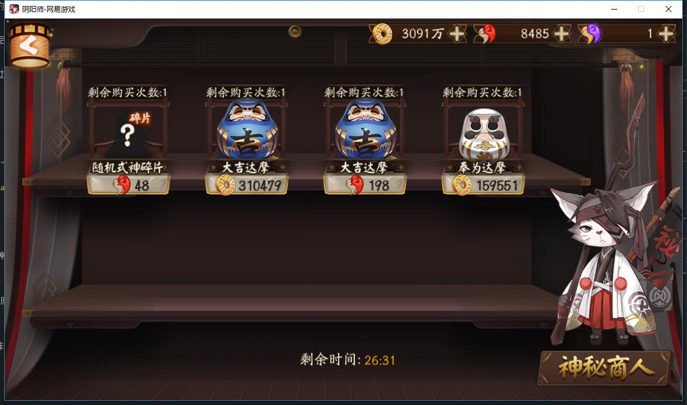奸商有时候会给低价蓝票59-89勾，都可以买
5点封魔之时的宝箱会有50勾的蓝票注意一下
商店的永久勾玉卡只赚不亏，早买早享受
秋田犬不要升级3阶，除非觉得厕纸比10几勾值钱的话
- 除了吸血姬9，10，小鹿10，兔子本，均可4保1反击过（5x高速椒图，5x6x高速惠比寿，6x高速针女花鸟，5x高速地藏日和，6x犬神/陆生）
-
吸血姬9：一个控制式神（百目鬼，御馔津，炎魔，雪童子等等，可借）
5x椒图，5x6x惠比寿，高命中x控制（御馔津不用命中），5x日和，6x犬神/陆生
注意点：
- 控住椒图快速打死，有跳跳弟弟，尽量打死椒图后快速灭掉跳弟，否则拖太久会导致团灭
- 如果带的是御馔津，能够同时封住跳弟被动+椒图，可以随意输出
-
吸血姬10：
1级（195招财兔子，165招财兔子，115招财兔，115招财兔子），1个5x日何方（128速度以上，速攻爆/爆伤，攻攻爆/爆伤），八百比丘尼（星之咒，星陨）
注意点：
- 日何方是为了第三层吸血姬必然的一次攻击，复活兔子
- 全程手动，不能断火，日何方只需要普攻，大概70-90分钟
- 第一层用星之咒封住青蛙后，打死青蛙
- 第二层优先打判官（薙魂），用星之咒封住小小白（地藏），击杀
- 第三层优先打山风，用星之咒封住日何方，随便击杀，樱花妖是地藏（封住再打）
-
小鹿10：
高速酒吞，妖刀，日和，椒图，花鸟
注意点：
- 普攻试出真身，快速击杀
- 击杀真身后有桃花，复活了真的会集体变身，需要快速击杀桃花，然后随便打
皮肤塔(低练度过本方案)
关于阴界之门70层
这个副本有个70层成就，这里主要说明比较稳的低练度单人70层（可以找大佬带那更好啊），日常50层后奖励相同
阴界之门怪物没有抵抗，除了跳哥自带蜜汁抵抗需要注意
雨随便上点命中即可，火的命中尽量堆100，防止意外，晴明灭盾
雨速度195，火尽量194，后面日常速度配比即可，感觉不稳的话花鸟可以换成拉条式神
缺点：时间比较久，但是过一次成就就好啦，以后打50层奖励是一样的
关于攒勾玉

日常任务20
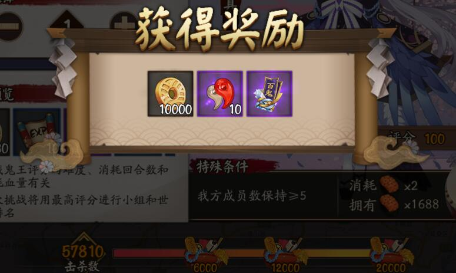地域鬼王5+5+10，这个经常打的人的可以多打2-3种，勾玉每天20-60不等
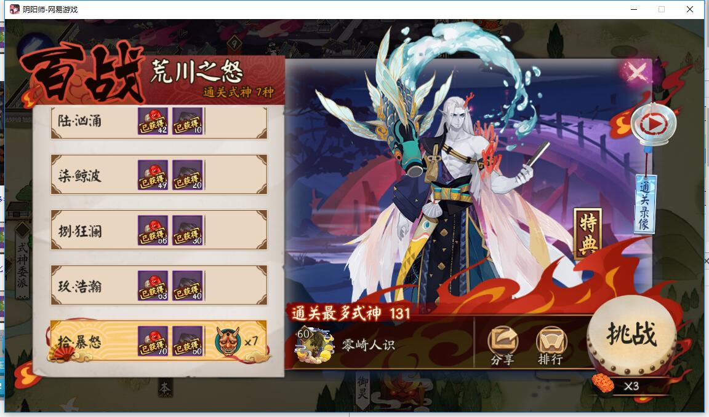秘闻百战,竞速：每周的奖励改版后勾玉少了很多，但是还是拿一下吧
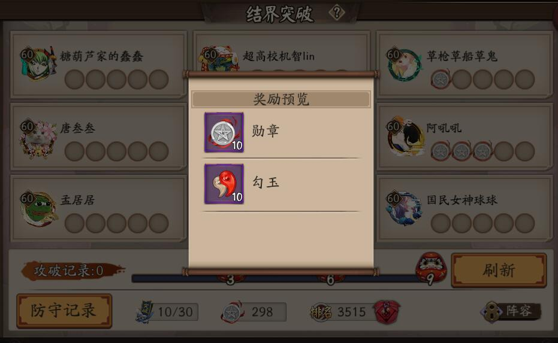个人突破：打前可以看下阵容，太麻烦可以3个刷新一下，和打10个的勾玉获取数量相同
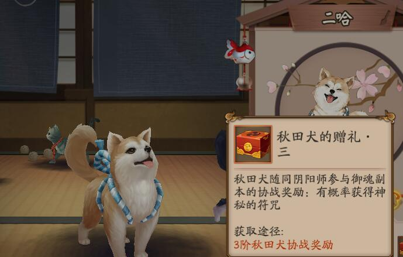秋田犬：不要升级3阶，除非觉得厕纸比10几勾值钱的话
各种活动。